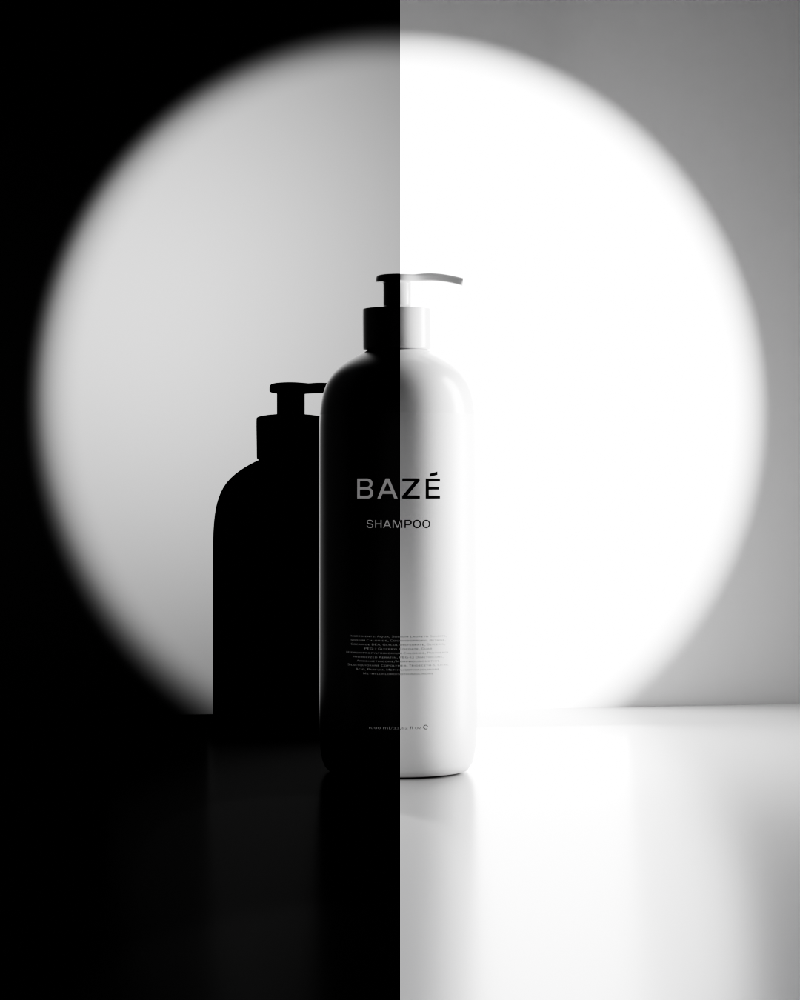
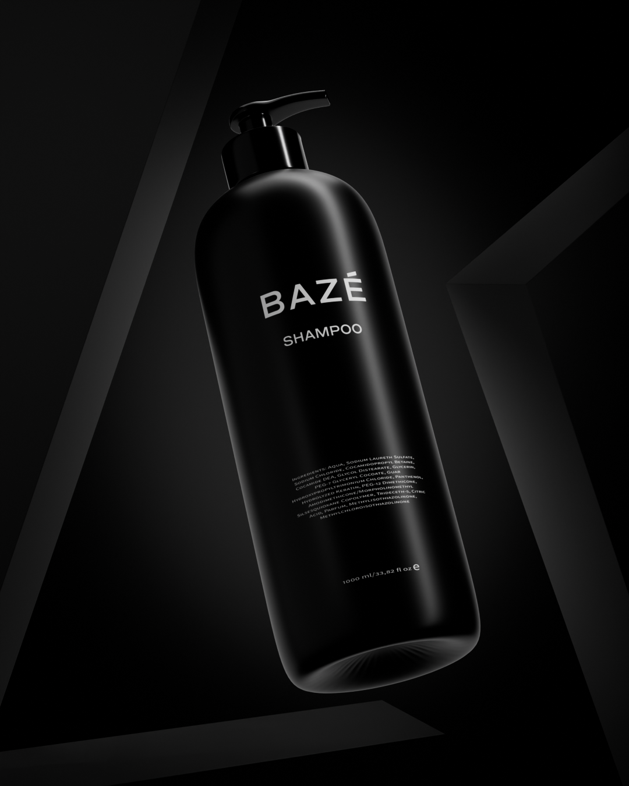
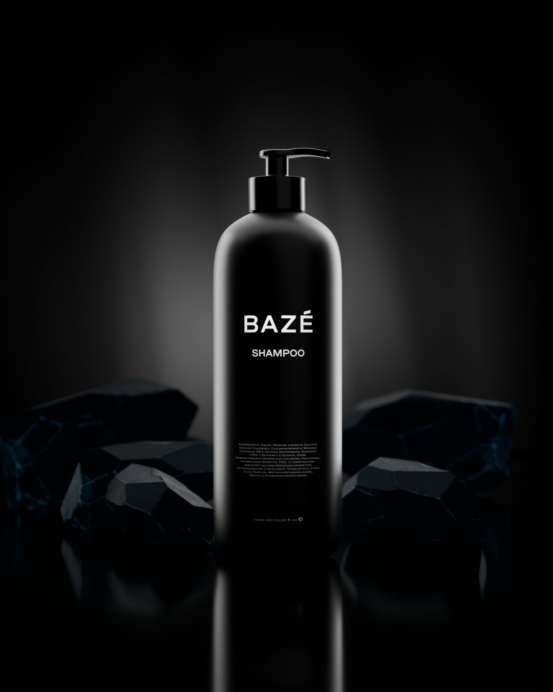
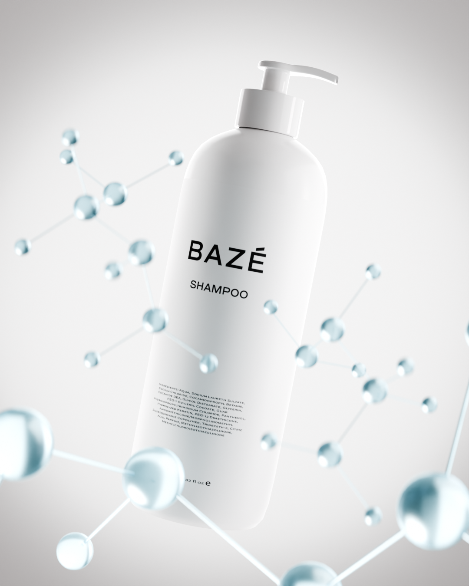
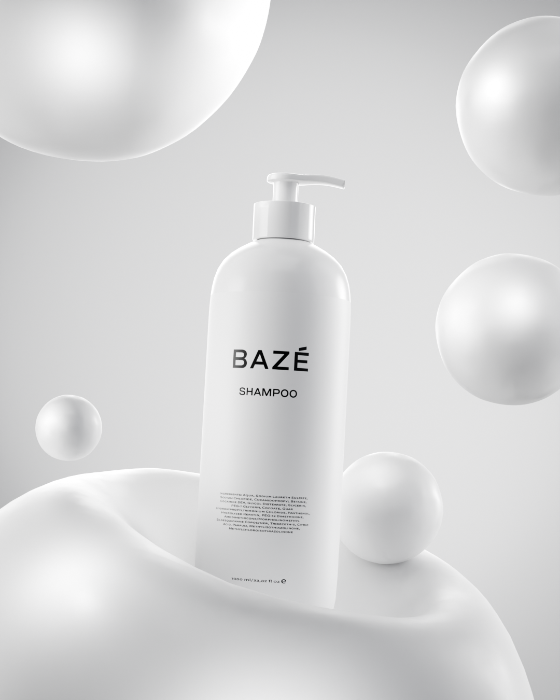

The Art
of Balance
Искусство баланса в предметной 3D-визуализации. Два цвета, два настроения и один визуальный язык


Противоположности притягивают
В основе The Art of Balance — контраст чёрного и белого, света и тени, спокойствия и выразительности. Два флакона BAZÉ становятся героями одной визуальной истории, где каждый кадр раскрывает разные грани продукта.
Чёрный задаёт глубину и графичность. Белый привносит воздух, чистоту и мягкость. Вместе они создают цельную серию предметных изображений для beauty-коммуникации.

Сила тени
В тёмных композициях материал раскрывается через блики и силуэт. Чёрный флакон выделяется на почти чёрном фоне — акцент на форме, поверхности и направленном свете.


Искусство света
Светлая серия строится на мягких оттенках, прозрачных деталях и игре геометрических форм. Воздушные сцены подчёркивают ощущение чистоты и визуального равновесия.


Две стороны одного бренда
Натуральная фактура камня и лаконичная бежевая сцена завершают визуальный рассказ. Разные настроения объединяются общей работой с формой, композиционным балансом и вниманием к продукту.
Семь авторских 3D-рендеров — единая концепция, построенная на противоположностях. Без анимации и лишних эффектов: главные выразительные средства здесь — свет, материал и композиция.
Проект на Behance ↗